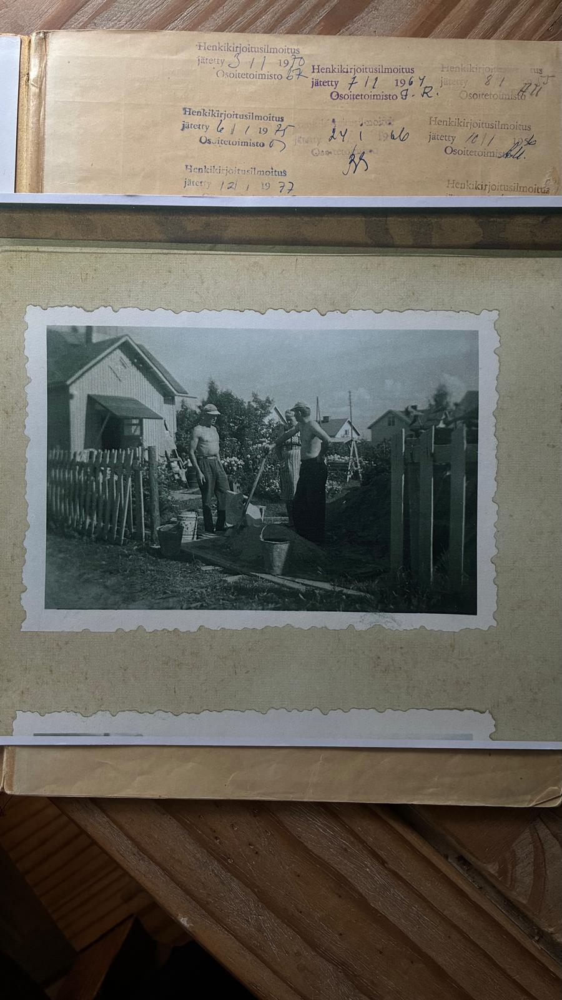
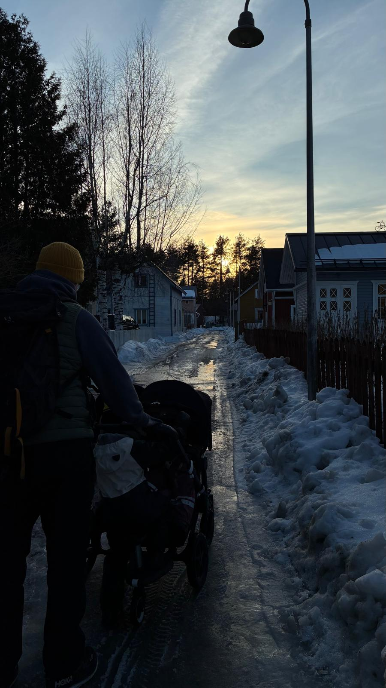
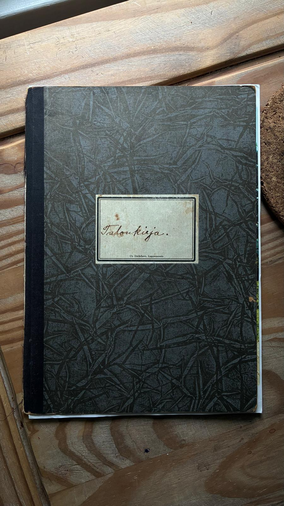
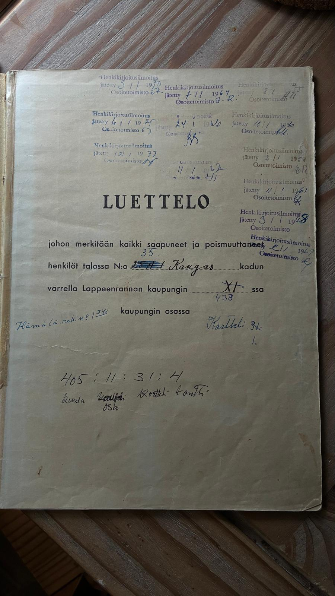
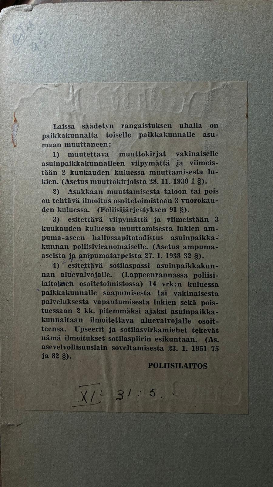
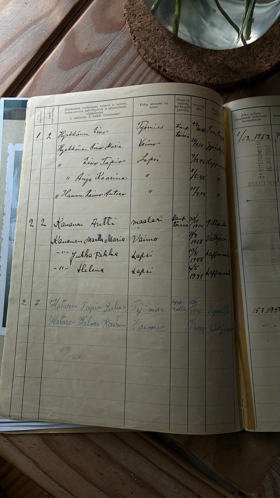

Alueen historiaa
Wanha Tykki on Lappeenrannassa sijaitseva asuinalue noin kilometrin päässä ydinkeskustasta. Alue tunnetaan viihtyisästä ympäristöstään, historiallisista rakennuksistaan ja yhteisöllisestä tunnelmastaan. Wanhan Tykin rakennukset ovat pääosin puutaloja pienillä tonteilla. Talot sijaitsevat lähellä toisiaan aivan katujen reunassa, ja pihoilla on tyypillisesti sisäpihan puolella sijaitseva talousrakennus.
Alueen historia ulottuu 1880-luvulle, jolloin paikasta tuli teollisuuslaitosten työntekijöiden asuinalue. Monet rakennuksista ovat säilyttäneet alkuperäisen tunnelmansa nykypäivään asti. Tykki on vuosien aikana muuttunut ja kehittynyt, mutta alueen yhteisöllisyys ja ainutlaatuinen henki ovat säilyneet sukupolvelta toiselle.

Yhteisöllisyys tänään
Alueella asuu eri-ikäisiä ihmisiä lapsiperheistä nuoriin ja ikääntyneempiin asukkaisiin. Yhteisöllisyys on tärkeä osa Wanhan Tykin identiteettiä. Asukkaat järjestävät yhdessä erilaisia tapahtumia, kuten kirpputoreja ja pop-up kahviloita, jotka tuovat ihmiset yhteen ja vahvistavat alueen yhteishenkeä.
Alueella on tapana pysähtyä juttelemaan naapureiden kanssa ja tervehtiä vastaantulijoita. Wanhalla Tykillä näkyy paljon lasten leikkejä, pyöräilyä ja pihapelejä. Uusitussa leikkipuistossa käy toisinaan myös läheinen päiväkoti, ja puisto toimii tärkeänä kohtaamispaikkana alueen lapsiperheille.




Tässä muutama kuva talokirjasta, joka tuli talomme mukana. Talokirja on vanha kirja, johon on kerätty tietoja ja kuvia talosta ja sen asukkaista vuosien varrella. Talokirja on tärkeä osa kotimme historiaa, ja se tarjoaa mielenkiintoisen näkymän menneisyyteen. Kuten viimeisestä kuvasta näkyy, ensimmäiset asukit vuonna 1952 ovat olleet perhe, johon on kuulunut isä, äiti ja kolme lasta. Talokirja on täynnä tarinoita ja muistoja, jotka tekevät kodistamme ainutlaatuisen.
Lähteenä käytetty Anu Eerikäisen kirjaa Tykin tarina. Vanhat kuvat omasta talokirjasta.